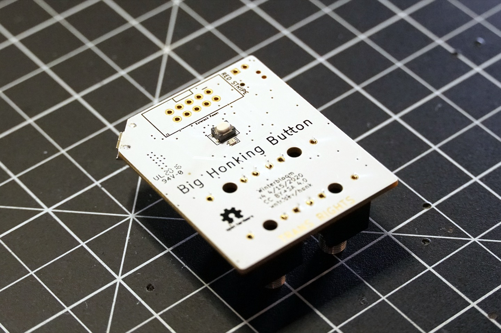
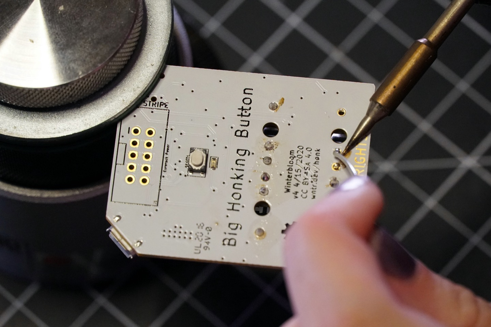
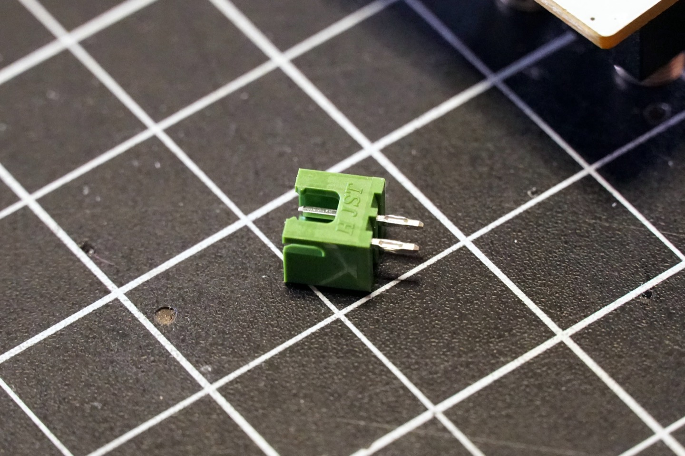
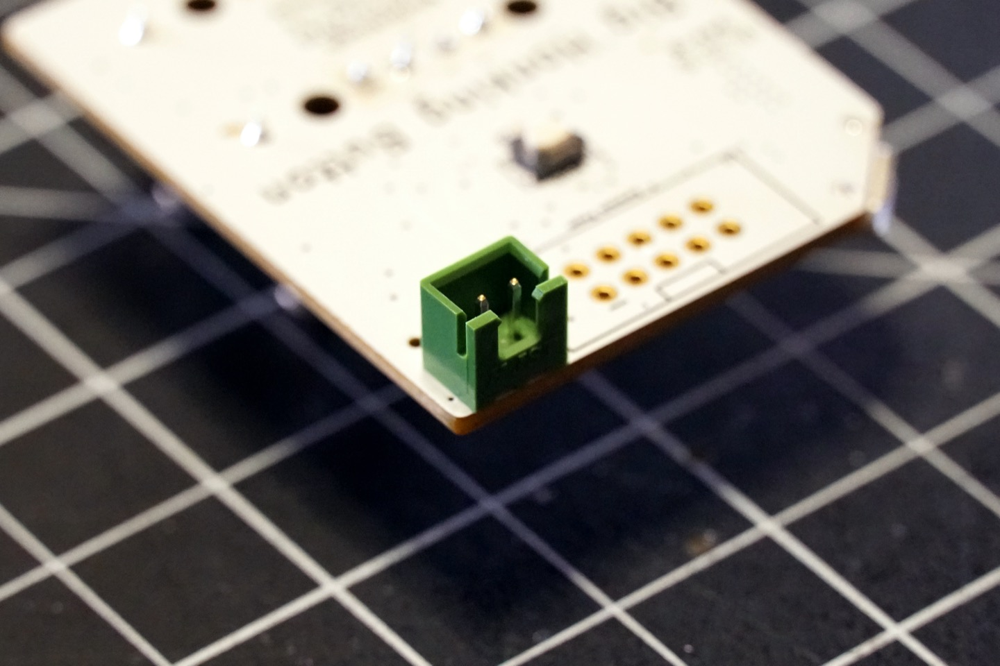
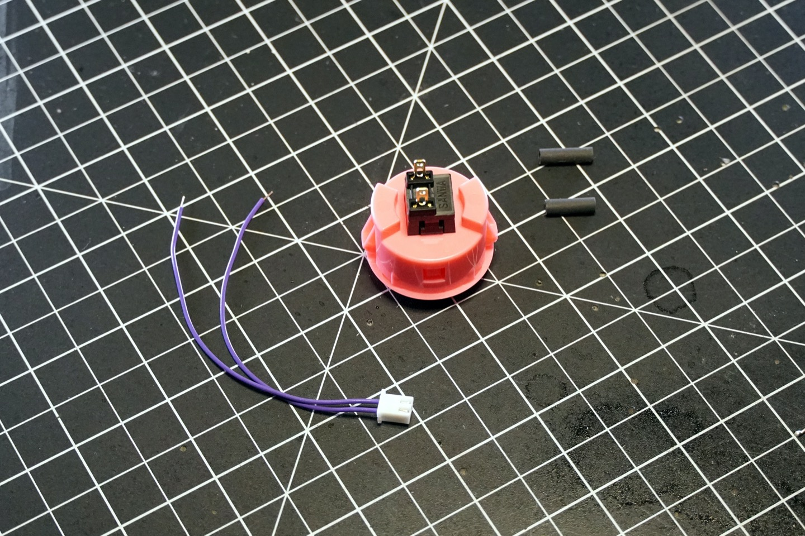
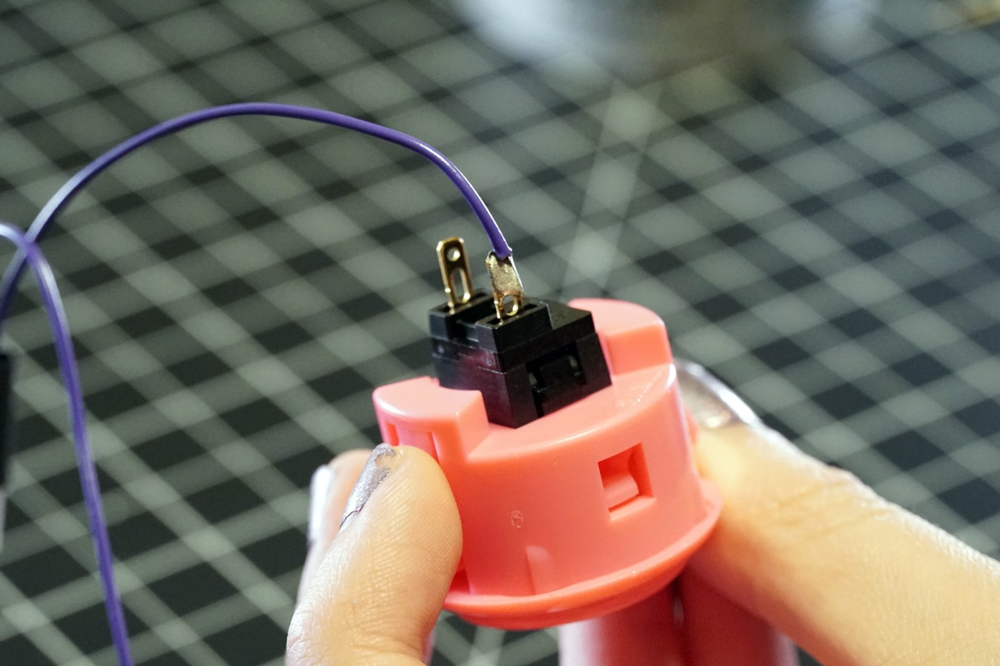
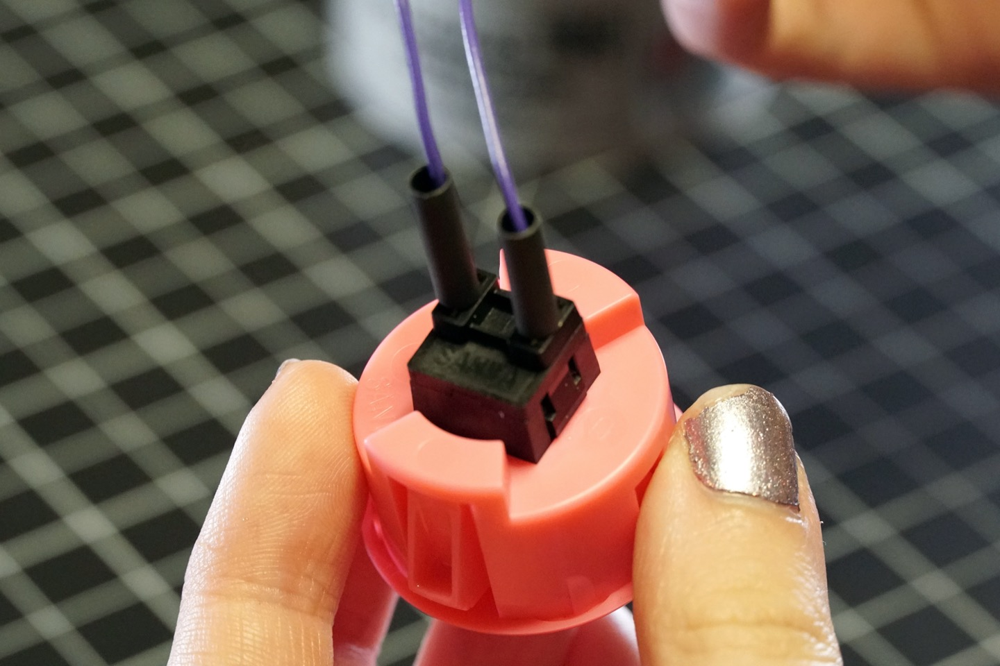
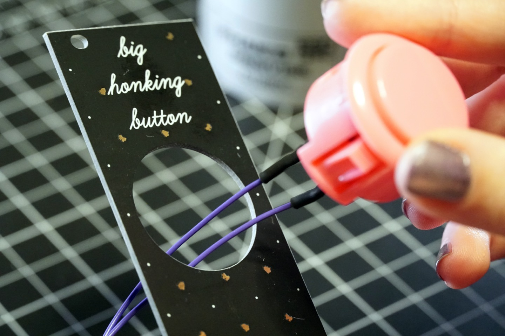

Big Honking Button Kit Build Guide#
Welcome to the build guide for the Big Honking Button! We hope you have a great time putting this module together and a wonderful time using it.
Please read all instructions thoroughly before starting. If you have questions or run into trouble please reach out to us on discord or drop us an email at support@winterbloom.com
This build is a beginner level kit. Some soldering experience is helpful but not required. If it's your first time soldering we recommend reading through Adafruit's guide to excellent soldering. This build takes around two hours to complete.
Tools and materials required#
Tools:
- A soldering iron, like this one
- A stiff brush. An old toothbrush will work great.
- (optional) Aa hot air station (like this). If you don't have one, have a lighter handy.
Materials:
- Solder, we can recommend Adafruit's 60/40 rosin core solder.
- Isopropyl alcohol, 70% or higher.
Kit contents#
Your kit should contain the following items. If any are missing please email us at support@winterbloom.com.

- (1) Big Honking Button printed circuit board (PCB)
- (1) SANWA arcade button
- (1) Button wiring harness (purple with white connector)
- (2) Short pieces of heat-shrink tubing
- (1) 10-pin Eurorack power connector (black)
- (1) 2-pin JST connector (green)
- (4) 1/8" jacks
- (4) Hex nuts for the 1/8" jacks
- (1) Panel
- (1) Extra-special rubber band (not pictured)
- (1) Eurorack power cable (not pictured)
- (2) M3 screws for attaching the module to your rack (not pictured)
Soldering the jacks#
The first step is to solder the 1/8" jacks on to the printed circuit board (PCB).

Place the jacks onto the front side of the board. Note that this side has the outline of the jacks on it.

Hold the jacks in place and carefully turn the board over. Double check and make sure the jacks are all flush with the PCB.

Now you can solder each of the pins from the jacks to the board. There are three per jack for a total of twelve.
Tip
If you have some helping hands or a [PCB clamp]https://hakkousa.com/products/accessories/pcb-holders/omnivise-pcb-holder.html(), you can place it in there. You just have to be careful to make sure that the jacks stay flush against the board. You can double-check after each solder joint and adjust them if necessary.

Soldering the JST connector#
Next you'll need to solder the green JST connector to the PCB.

The JST connector goes on the back side of the board.

Note the orientation of the connector. It shouldn't be overhanging the board, it should come right up to the edge.


Just like with the 1/8" jacks, flip the board over and solder the two pins of the JST connector to the board. Make sure the connector is flush with the board. You can use a piece of tape to hold it in place.

Soldering the power connector#
Next up is the 10-pin Eurorack power connector.

The power connector also goes on the back side of the board. When placing note the notch in the outline on the board. You'll need to make sure the slot on the connector matches where the notch is on the outline. The slot should be facing the edge of the board.

Once placed you can solder the 10 pins on the other side of the board. Be careful here and avoid touching the small components near the pins with your iron.

Cleaning the board#
At this point your board probably has some icky soldering residue on it. You can clean that using the isopropyl alcohol and the stiff brush. Just wet the brush a little with the alcohol and give the board a scrub. Do not use water, soap, or anything else to clean the board. Allow the board to dry completely before trying to use it.
Soldering the wire harness to the button#
Set the board aside for a moment. The next step is to attach the wire harness to the button. You'll need the button, wire harness, and the two small pieces of heat shrink tubing.

Place the two pieces of heat-shrink tubing onto the two wires on the wire harness. Push them all the way to the white connector.

Carefully solder one of the wires from the harness onto the lugs on the button. You may need to get a friend to hold the button for you. Make sure the heat-shrink tubing stay on the wire.

Repeat for the other wire and lug. Once again, make sure that the heat-shrink tubing stays on the wire.

Now you can push the heat-shrink tubing over the solder joints and the lugs to cover the connections.

Using a hot air station (set to no higher than 150 degrees celsius) or a lighter (very carefully) apply heat to the heat-shrink tubing to shrink it over the lug. It will not completely shrink around the wire side so do not apply excess heat - you will melt the wire's sleeving.

Putting it all together#
All of the soldering is complete! You can put away the soldering iron. The next steps are putting it all together.
First, place the button's wires through the large hole in front side of the panel.

Push the button into the hole - it should snap into place.

Flip the panel over so that you can see the back part of the button.

Place the rubber band around the button.

And then double up the rubber band around the button. Make sure the rubber band is as close to the panel as possible. This will hold the button snugly in place so that it doesn't wiggle when you use it.

Now you can connect the button's white connector to the green JST header on the board. Place it so that the tab on the connector matches the notch in the header.

One aligned, apply some pressure to snap the connector into the header. It will lock in place.

Next, align the 1/8" jacks on the board to the matching holes on the panel and push them through the panel.


Grab the four hex nuts and tighten them around each 1/8" jack, securing the panel to the board.

All done#
Congratulations! You've finished your Big Honking Button!

Now that it's all put together go check out the User's Guide and please show us your work by tweeting at @wntrblm or tagging @wntrblm in your instagram post.